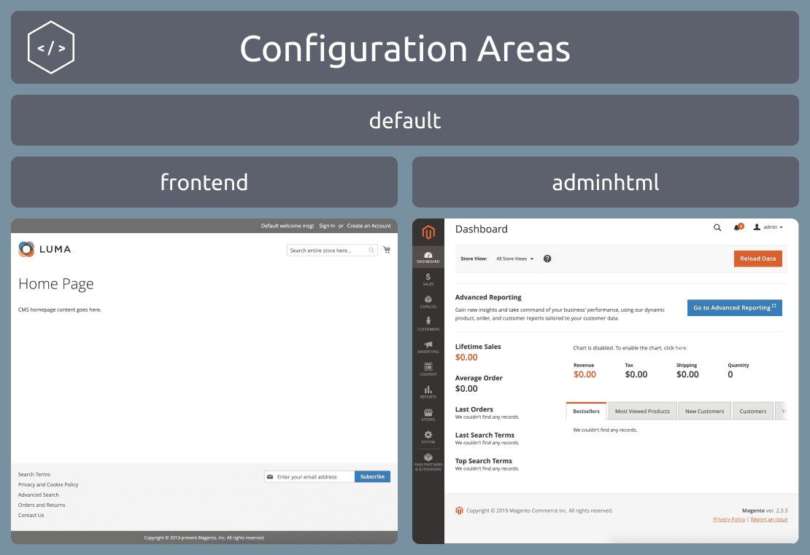
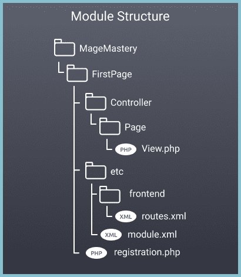
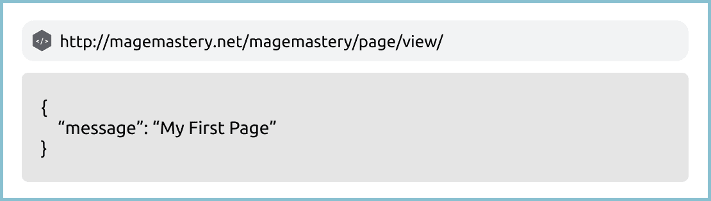

Оригинал
Create a Page in Magento 2
Создание страницы в Magento 2
Magento 2 provides a set of framework features that allow to easily create different entry points. One of the entry points we are going to learn in this lesson is a Page.
Magento 2 предоставляет набор функций фреймворка, которые позволяют легко создавать различные точки входа. Одна из точек входа, которую мы собираемся изучить в этом уроке, - это страница.
A page in Magento 2 is a result of an Action Controller execution. Each controller either returns an HTML content or redirects to another controller for further processing. In this lesson, we are going to create a Page, that shows a JSON message in a browser when it has been accessed via a custom route.
Страница в Magento 2 является результатом выполнения Action Controller. Каждый контроллер либо возвращает содержимое HTML, либо перенаправляет другому контроллеру для дальнейшей обработки. В этом уроке мы собираемся создать страницу, которая показывает сообщение JSON в браузере, когда к нему обращаются через настраиваемый маршрут.
Lesson Overview
Обзор урока
In this lesson we are going to learn the following:
В этом уроке мы узнаем следующее:
How to create a page in Magento 2?
Как создать страницу в Magento 2?
How to create an Action Controller?
Как создать контроллер действий?
How to register a new route?
Как зарегистрировать новый маршрут?
How to return a JSON data from a Controller?
Как вернуть данные JSON из контроллера?
Before we begin
Прежде чем мы начнем
For this tutorial, I've created the MageMastery_FirstPagemodule with the registration.phpand module.xmlfiles. And the module has been successfully registered with the bin/magento setup:upgrade CLI command.
Для этого урока я создал модуль MageMaster_FirstPage с модулем registration.phpand.xmlfiles. И модуль был успешно зарегистрирован с помощью CLI команды bin/magento setup:upgrade.
The registration.php file:
<?php
use Magento\Framework\Component\ComponentRegistrar;
ComponentRegistrar::register(
ComponentRegistrar::MODULE,
'MageMastery_FirstPage',
__DIR__
);
The module.xml file:
<?xml version="1.0"?>
<config xmlns:xsi="http://www.w3.org/2001/XMLSchema-instance"
xsi:noNamespaceSchemaLocation="urn:magento:framework:Module/etc/module.xsd">
<module name="MageMastery_FirstPage" />
</config>
For more information about the module creation and registration, please refer to the previous lesson A Module in Magento 2.
Для получения дополнительной информации о создании и регистрации модуля, пожалуйста, обратитесь к предыдущему уроку Модуль в Magento 2.
Registering a new route
Регистрация нового маршрута
In order to create a new page in Magento 2, which is accessible via a browser, there are two files that have to be created in a Magento 2 module. The first file is routes.xml. The file is responsible for providing information to Magento 2 where to look for a particular controller module's name and additional rules to match a URI.
Чтобы создать новую страницу в Magento 2, доступную через браузер, в модуле Magento 2 необходимо создать два файла. Первый файл - routes.xml. Файл отвечает за предоставление информации в Magento 2, где искать имя конкретного модуля контроллера и дополнительные правила для соответствия URI.
The second file is a controller class, that should be executed and process the incoming request.
Второй файл - это класс контроллера, который должен выполняться и обрабатывать входящий запрос.
Let's go ahead and create a new routes.xmlfile under the MageMastery/FirstPage/etc/ directory.
Давайте продолжим и создадим новый файл routes.xmlfile в каталоге MageMaster/FirstPage/etc/.
Configuration in Magento 2
Конфигурация в Magento 2
The configuration can be provided for the two different areas: frontend and adminhtml areas. There is also a default that is used to provide a configuration for both areas.
Конфигурация может быть предоставлена для двух разных областей: области внешнего интерфейса (frontend) и области adminhtml. Также существует значение по умолчанию (default), которое используется для настройки обеих областей.

For the storefront configuration changes, we have to add a new frontenddirectory inside the MageMastery/FirstPage/etc/directory. We will talk more about the adminhtmldirectory in the upcoming lessons.
Для изменения конфигурации витрины мы должны добавить новый каталог внешнего интерфейса в каталог MageMaster/FirstPage/etc/. Мы поговорим больше о каталоге adminhtml directory в следующих уроках.
If you haven't created the etc/frontend directory this is the right time to do it.
Если вы еще не создали каталог etc/frontend, сейчас самое время это сделать.
The routes.xml file
Файл routes.xml
Inside the etc/frontenddirectory let's create the routes.xmlconfiguration file. All routes configuration files from all Magento 2 registered modules including the MageMastery/FirstPagemodule will be merged and provided for the execution.
Внутри каталога etc/frontend создадим файл конфигурации routes.xml. Все файлы конфигурации маршрутов из всех зарегистрированных модулей Magento 2, включая MageMaster/FirstPagemodule, будут объединены и предоставлены для выполнения.
The routes.xml initial file state:
Начальное состояние файла routes.xml:
<?xml version="1.0"?>
<config xmlns:xsi="http://www.w3.org/2001/XMLSchema-instance"
xsi:noNamespaceSchemaLocation="urn:magento:framework:App/etc/routes.xsd">
</config>
Magento 2 Open Source provides so-called routers, and each router has its own identifier. We are not going to go deeply into the router implementation just now. We are going to use the standard router that is identified as "standard". This is what you see in the code below:
Magento 2 с открытым исходным кодом предоставляет так называемые маршрутизаторы, и каждый маршрутизатор имеет свой собственный идентификатор. Мы не собираемся сейчас углубляться в реализацию роутера. Мы собираемся использовать стандартный маршрутизатор, обозначенный как «стандартный». Вот что вы видите в приведенном ниже коде:
<?xml version="1.0"?>
<config xmlns:xsi="http://www.w3.org/2001/XMLSchema-instance"
xsi:noNamespaceSchemaLocation="urn:magento:framework:App/etc/routes.xsd">
<router id="standard">
</router>
</config>
Inside the standard router node, we can add routes configuration. Each route is responsible for providing a front name that is used to match the route with a request URL. Also, the route should provide a module name, that includes an action controller class.
Внутри стандартного узла маршрутизатора мы можем добавить конфигурацию маршрутов. Каждый маршрут отвечает за предоставление внешнего имени, которое используется для сопоставления маршрута с URL-адресом запроса. Кроме того, в маршруте должно быть указано имя модуля, которое включает класс контроллера действий.
The route configuration for the MageMastery_FirstPage module and the magemastery front name looks as follow:
Конфигурация маршрута для модуля MageMaster_FirstPage и frontName "magemastery" выглядит следующим образом:
<route id="magemastery_firstpage" frontName="magemastery">
<module name="MageMastery_FirstPage" />
</route>
Note the id argument of the route. It has to be unique across the Magento 2 application. The recommended naming convention for the route id is lower-case module name e.g. magemastery_firstpage to ensure the uniqueness.
Обратите внимание на аргумент id маршрута. Он должен быть уникальным во всем приложении Magento 2. Рекомендуемое соглашение об именах для идентификатора маршрута - это имя модуля в нижнем регистре, например: "magemaster_firstpage", чтобы гарантировать уникальность.
Let's see the final state of the routes.xml file:
Посмотрим на финальное состояние файла routes.xml
<?xml version="1.0"?>
<config xmlns:xsi="http://www.w3.org/2001/XMLSchema-instance"
xsi:noNamespaceSchemaLocation="urn:magento:framework:App/etc/routes.xsd">
<router id="standard">
<route id="magemastery_firstpage" frontName="magemastery">
<module name="MageMastery_FirstPage" />
</route>
</router>
</config>
Magento 2 standard router reads the route configuration that starts with the magemasteryrequest URI part, finds a module name with the name MageMastery_FirstPage, and will check for a controller, which can process the request.
Стандартный маршрутизатор Magento 2 считывает конфигурацию маршрута, которая начинается с URI-части magemasterrequest, находит имя модуля с именем MageMaster_FirstPage и проверяет наличие контроллера, который может обработать запрос.
A controller in a module is the second bit or file to be created in this lesson.
Контроллер в модуле - это второй бит или файл, который будет создан в этом уроке.
Action Controller
Контроллер действий
All controllers of a module should be located in a directory called Controller. There is another directory level that should exist inside the Controller directory before the class can be located. For this lesson, we are going to create a Page directory in the Controller.
Все контроллеры модуля должны находиться в каталоге с именем Controller. Есть еще один уровень каталога, который должен существовать внутри каталога Controller до того, как класс можно будет найти. В этом уроке мы собираемся создать каталог Page в каталоге Controller.
Inside the Page directory, let's create the View.php file.
Внутри Page directory создадим файл View.php.
As a result, you should have the following module structure.
В результате у вас должна получиться следующая модульная структура.
Module Structure
Структура модуля

The View.php file is a MageMastery\FirstPage\Controller\Page\View class. The Viewclass should extend the Magento\Framework\App\Action\Action class.
Файл View.php - это класс MageMaster\FirstPage\Controller\Page\View. Класс View должен расширять класс Magento\Framework\App\Action\Action.
<?php
declare(strict_types=1);
namespace MageMastery\FirstPage\Controller\Page;
use Magento\Framework\App\Action\Action;
class View extends Action
{
public function execute()
{
}
}
The Action class requires to provide implementation of the execute() method. Once Magento 2 will resolve the route it will trigger the View::execute() method. The execute() method's logic should be added in order to render something on a front end. For this lesson, we are going to return a JSON response with the message.
Класс Action требует предоставить реализацию метода execute(). Как только Magento 2 разрешит маршрут, он вызовет метод View::execute(). Логика метода execute() должна быть добавлена, чтобы что-то рендерить что-то во внешнем интерфейсе. В этом уроке мы собираемся вернуть ответ JSON с сообщением.
In order to return anything from the execute() method, there is a resultFactory variable that is provided to us from the Action parent class. The create() method of the Magento\Framework\Controller\ResultFactory class creates an instance of a Magento\Framework\Controller\Result\Jsonclass. The Jsonclass then can be used to convert an array into a JSON and return back from the execute() method.
Чтобы вернуть что-либо из метода execute(), существует переменная resultFactory, которая предоставляется нам из родительского класса Action. Метод create() класса Magento\Framework\Controller\ResultFactory создает экземпляр класса Magento\Framework\Controller\Result\Jsonclass. Затем Jsonclass можно использовать для преобразования массива в JSON и возврата из метода execute().
$jsonResult = $this->resultFactory->create(ResultFactory::TYPE_JSON);
We can use the $jsonResult to set an array with the key message and the value to be My First Page.
Мы можем использовать $ jsonResult, чтобы установить массив с ключевым сообщением и значением My First Page.
$jsonResult->setData([
'message' => 'My First Page'
]);
The resulting code of the View controller class looks as follow:
Результирующий код класса контроллера View выглядит следующим образом:
<?php
declare(strict_types=1);
namespace MageMastery\FirstPage\Controller\Page;
use Magento\Framework\Controller\Result\Json;
use Magento\Framework\App\Action\Action;
use Magento\Framework\Controller\ResultFactory;
class View extends Action
{
public function execute()
{
$jsonResult = $this->resultFactory->create(ResultFactory::TYPE_JSON);
$jsonResult->setData([
'message' => 'My First Page'
]);
return $jsonResult;
}
}
In order to a result in a browser, the Magento 2 configuration cache has to be cleaned. The cache cleanup can be done with the Magento CLI command cache:clean. The command has to be executed from the Magento 2 project root directory.
Чтобы открыть браузер, необходимо очистить кеш конфигурации Magento 2. Очистку кеша можно выполнить с помощью команды Magento CLI cache: clean. Команда должна выполняться из корневого каталога проекта Magento 2.
Navigate to the http://magento2ce.magemastery.net/magemastery/page/viewurl, where the magento2ce.magemastery.net domain name can be different one, depending on what domain name you provided during the Magento 2 installation.
Перейдите на http://magento2ce.magemastery.net/magemastery/page/viewurl, где доменное имя magento2ce.magemastery.net может быть другим, в зависимости от того, какое доменное имя вы указали во время установки Magento 2.

Let's have a closer look at /magemastery/page/view path for the page. The first part is the magemastery, this is a front name that is configured in the routes.xml file. The pageis the name of a directory Pageinside which there is a View class. The View::execute() method returns the JSON object.
Давайте подробнее рассмотрим путь /magemaster/page/view для страницы. Первая часть - это "magemaster", это fromtName, которое настраивается в файле routes.xml. "page" - это имя каталога. Внутри страницы есть "View" class. Метод View::execute() возвращает объект JSON.
The homework for this lesson. Create a custom controller with the custom JSON message which has to be rendered on a page with the route /magemastery/custom/page.
Домашнее задание для этого урока. Создайте настраиваемый контроллер с настраиваемым сообщением JSON, которое должно отображаться на странице с маршрутом/magemastery/custom/page.